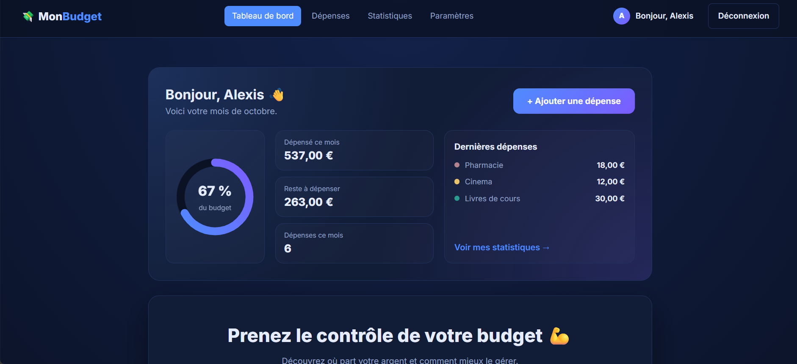

CinéMatch
Sur une application de streaming fournie par mon formateur, j'ai conçu le moteur de recommandation : un score personnalisé selon les genres préférés, les goûts déduits des notes et les utilisateurs similaires, validé par mes tests automatisés.